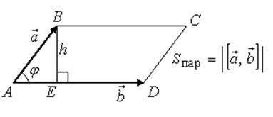

Геометрические свойства векторного произведения векторов:
Модуль вектора  равен площади параллелограмма, построенного на
векторах
равен площади параллелограмма, построенного на
векторах  и
и  .
.
равен площади параллелограмма, построенного на
векторах и .
Площадь параллелограмма, построенного на векторах и ,
равна
и ,
равна
Вычисление
площади параллелограмма, построенного на двух векторах
.
Необходимым и достаточным условием коллинеарности двух
векторов является равенство нулю их векторного произведения.
Доказательство:
Необходимость. Пусть и
коллинеарны.
и
коллинеарны.Тогда
.
Достаточность.
Пусть
.
Тогда существуют три возможности:
1˚. либо  ,
,
,2˚. либо ,
3˚. либо .
1. или , коллинеарен
;
коллинеарен
;2) и 3) коллинеарен по определению.
коллинеарен по определению.